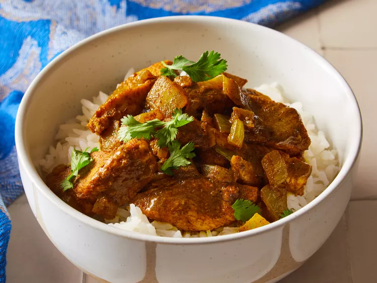

Chicken Curry

Chicken curry is a simple dish packed with flavour.
It is relatively light and quick to make.
Ingredients
- 200 grams of Chicken breast
- 150 grams of white rice
- 1 jar of 'some curry sauce'
- 1 bell pepper of your choice
- Salt
- Pepper
Steps
- Turn two hobs to medium heat
- Pour 1 tablespoon of olive oil into the pan, and pour 350mL of water into the pot
- Place the pan on one hob and the pot on the other
- Pour the rice into the pot once the water has started to boil
- Chop the Chicken breast into small pieces and place them into the pan
- Using a different knife, or after cleaning the current one, chop the bell pepper
- Crack over some salt and pepper and leave the chicken to brown on one side
- Once the Chicken has browned, turn over and add more salt and pepper
- After the chicken has browned, pour the curry sauce over the chicken
- Once the curry sauce comes to a boil, stir and turn down the heat to medium low
- While the chicken is simmering, add the bell pepper chunks to the curry sauce
- After 20 minutes of total cooking time, remove the pan and the pot from the hob
- Strain the rice and place into a bowl, then top with the chicken curry
Home